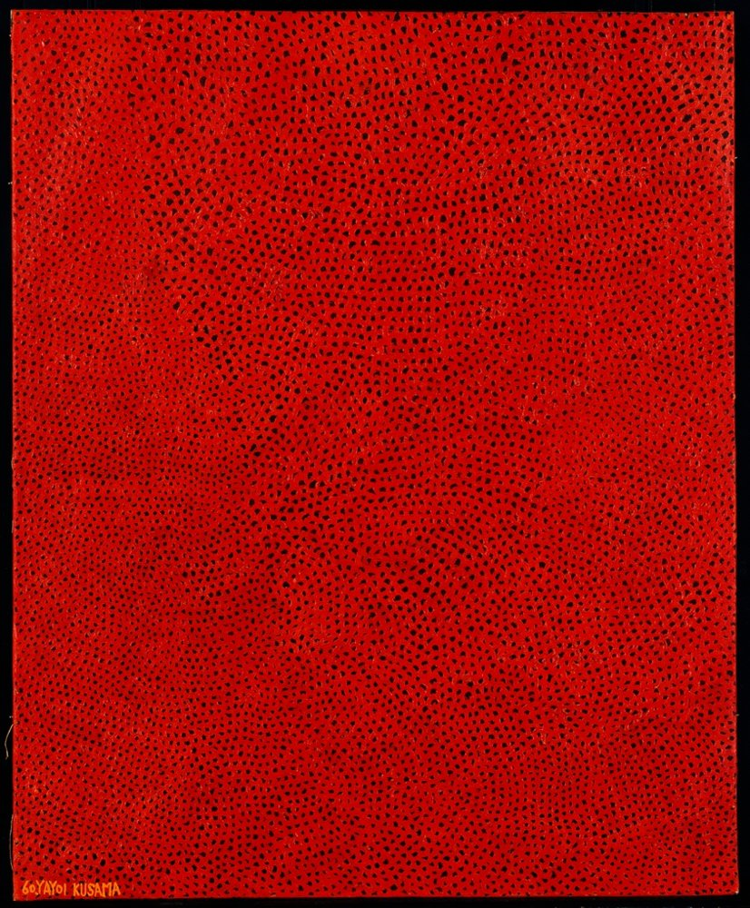

No. I.Z
Yayoi Kusama · 1960 · Oil on canvas · 79.7 × 64.8 cm · Art Institute of Chicago
In copyright. Look and learn: shown for study, not for download.
Kusama left Japan in 1957 at the age of twenty-eight, destroying many of her early works before she went. After a year in Seattle she reached New York in 1958 and began the Infinity Nets, canvases filled with net-like patterns in a slow, labour-intensive way of making marks. A solo show at the Brata Gallery in 1959 brought her critical acclaim. This one, from 1960, is 79.7 by 64.8 centimetres.